The background is a uniform grid with position in
real-space given by the quantities
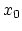, 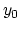,  , 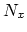, 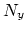, 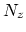, 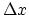, 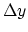,
(see Figure
, 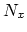, 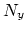, 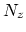, 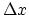, 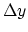,
(see Figure  ).
).
An index-space defines a specific correspondance between
integer index triples and real-space coordinates.
This correspondance is defined in terms of the background
(for index-space  )
by the resolutions,
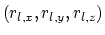,
and an alignment convention (which would differ for cell-centered
gridding; we are doing vertex-centered gridding at this time).
)
by the resolutions,
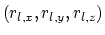,
and an alignment convention (which would differ for cell-centered
gridding; we are doing vertex-centered gridding at this time).
Specifically, the real-space coordinate,
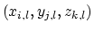,
associated with the integer index triple, 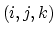,
on index-space  is given by:
is given by:
| 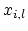 | 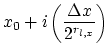 | (7.1) | |
| 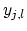 | 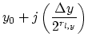 | (7.2) | |
| 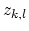 | 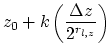 | (7.3) |
| 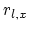 | 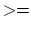 | 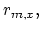 | (7.4) |
| 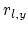 | 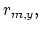 | (7.5) | |
| 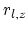 | 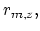 | (7.6) |
A subregion is a collection of indices on index-space
 , described by the quantities
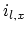, 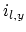, 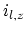,
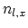, , 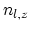,
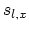, 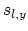, 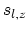.
Specifically, a subregion is defined by
(see Figure
, described by the quantities
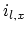, 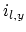, 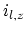,
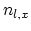, , 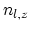,
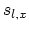, 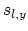, 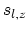.
Specifically, a subregion is defined by
(see Figure  )
)
| 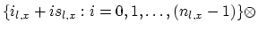 | (7.7) | ||
| 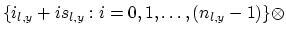 | (7.8) | ||
| 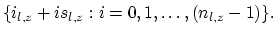 | (7.9) |
A subregion-array is just an array of subregions.
A region is an array of subregion-arrays.
A subgrid is a subregion with striding factors equal 1.
A subgrid-array is an array of subgrids.
A grid is also an array of subgrids.